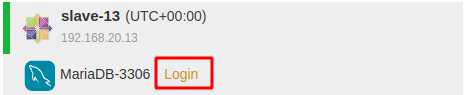
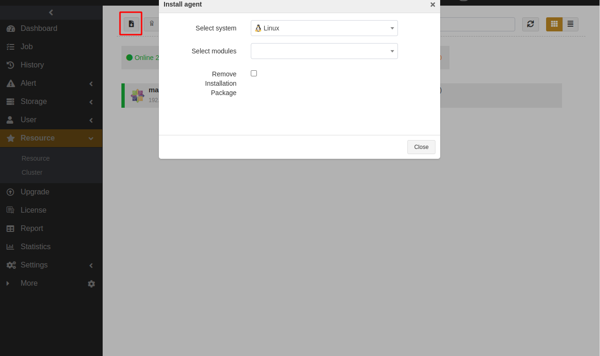
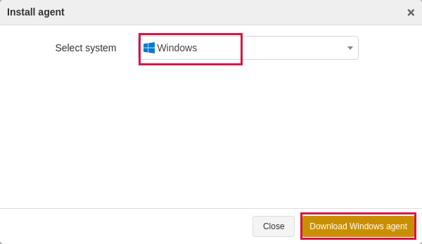
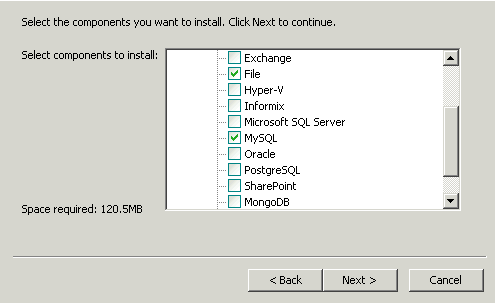
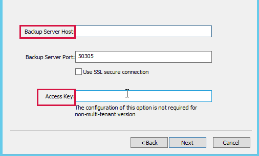
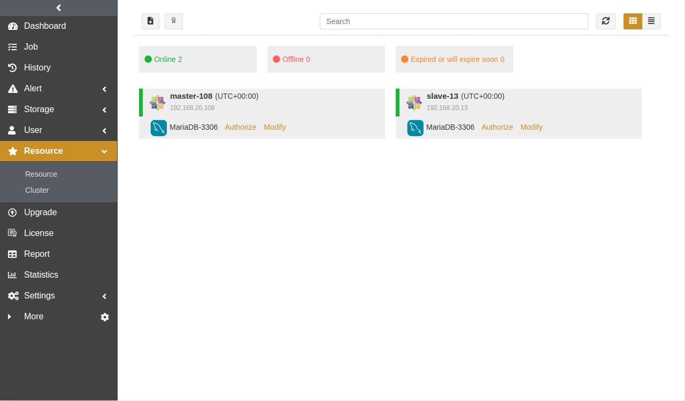

Administrator’s Guide#
Introduction#
Aurreum Data Protection Suite (ADPS) backup and disaster recovery platform is an enterprise-level data security protection platform. With the built-in backup cloud system, ADPS provides data backup, disaster recovery, multi-tenant shared use and collaboration of local and cloud data and other features to protect enterprise data such as operating systems, databases, applications, files, virtual machines, object storage, and many more. When a data disaster occurs, ADPS can restore the data completely, accurately and quickly, to minimize the economic loss.
This guide introduces how to use ADPS as System Admin (the admin).
System Component#
ADPS system components contain Backup Server, Storage Server, and Agent.
Backup Server: It is responsible for managing the connections of the Backup Agent and Storage Server. It can monitor and manage the business information of each agent resource, including backups and restores, and the information of storage servers.
Storage Server: It is responsible for receiving and storing data as well as processing the recycling mechanisms of backup data. The Backup Server and Storage Server components can be installed on the same or different devices. One backup server can manage multiple storage servers to achieve storage scalability.
Agent: It is responsible for responding to the commands of the backup server console as well as performing the backup and restore jobs. The Agent is installed on the server where users store business data. It will be managed by the backup server after their connection.
Features#
Feature |
Description |
|---|---|
Backup and restore |
Files backup and restore |
Backup and Disaster recovery |
Database replication |
Data management |
Effective data compression |
Operation and maintenance (O&M) management |
Labeled resource management |
User System#
ADPS user system contains different users roles. The user system enables different user roles to be in charge of various operations, and provides unified monitoring, isolation, checks and balances to guarantee that each user’s behavior can be monitored and that every event can be traced back to the origin.
After the successful installation, ADPS has four built-in user roles by default: System Admin (the admin), Audit Admin, System Security, and System Monitor. Their permissions are as shown in the following table:
Role |
Permission |
|---|---|
System Admin (the admin) |
Responsible for the system configuration, user management, storage management, license management, resource management, operation and maintenance, etc. |
Audit Admin |
Responsible for recording user actions and log retention management. |
System Security |
When the Enable Security User option is checked, the system user management such as adding, deleting, user, modifying, and locking user is responsible by System Security. |
System Monitor |
Responsible for monitoring the operation state of the system. All system information can be monitored, including the system and job state of sub-servers. |
As System Admin, you can customize three user roles: Admin, Monitor, and Operator. Their permissions are as shown in the following table:
Role |
Permission |
|---|---|
Admin |
Responsible for the system management, but without the management of important data in Storage Server. |
Monitor |
Responsible for monitoring the operation system state. |
Operator |
Responsible for the management of the backup and restore on the Agent. |
Storage Design#
Multiple Storage Types#
Storage media is used to store various backup data. ADPS supports common storage types such as disk storage, tape storage, object storage and CD storage. You can create different storage pools for users.
Disk storage
When the disk storage media is mounted to the operating system, the file system is formatted as XFS or ZFS, and the backup data is saved to the file system. You can create the following types of disk storage pools:
Type |
Description |
Note |
|---|---|---|
Standard storage pool |
Used to store the backup data of traditional backup types. |
- |
De-duplication storage pool |
Used to store the backup data of traditional backup types. |
The file system of the disk requires the XFS format. |
Real-time backup pool |
Used to store the Oracle and MySQL continuous backups. |
- |
File synthetic pool |
Used to store the File, Hadoop, and OBS synthetic backups. |
The fast restore requires adps-nfs module installed. |
Database synthetic pool |
Used to store Oracle, SQL Server and MySQL synthetic backups. |
The file system of the disk requires the ZFS format. |
LAN-Free pool |
The backup data is transfered to the LAN-Free pool over SAN. |
The file system of the disk requires the ZFS format. |
Tape storage
The storage media connect tape libraries or virtual tape libraries to the tape controller (adps-controller installation required). You can scan the connected tape library on the corresponding page and create tape library pools to store the backup data.
Type |
Description |
Note |
|---|---|---|
Tape library pool |
Used to store the backup data from traditional backup types. |
The management of tape library require adps-controller installed. |
Object storage
Object storage is secure and convenient. By using object storage service pool, the backup data on Agent can be stored directly to the cloud (D2C). Enter parameters such as vendor, access key, secret key, etc. to create an object storage service pool.
Type |
Description |
Note |
|---|---|---|
Object storage service pool |
Used to store the backup data of traditional backup types. |
- |
Flexible Pool Recycling Strategies#
The data in storage pools have a well-tried life cycle management. You can set the recycling strategy according to the storage time, space and other conditions to achieve the recycling of storage space effectively.
Supported retention policies are as the followings :
Retention policy |
Strategy |
Description |
|---|---|---|
Time policy |
Backup sets retention days |
When the full backups of each resource are completed, the backup sets of both incremental backups (depending on full backups) and log backups will be marked as expired together when their retention days exceed the set days. |
Space policy |
Backup sets retention quota |
When the total size of the backup sets in the pool exceeds the set retention quota, the backup sets of the earliest full backups, incremental backups (depending on full backups) and log backups will be marked as expired together. |
Time and space policy |
Backup sets retention days, backup sets retention quota |
If you set the retention days and retention quota, the backup sets will be marked as expired as long as either set condition is met. |
Delay delete backup sets: You can delay the deletion of expired backup sets by checking this option.
When the option is checked, the earliest expired backup sets will be deleted to free up space when the disk space usage exceeds 90%. (The percentage can be modified in Storage->Storage Server->Modify)
When the option is unchecked, backup sets in the storage pool will be deleted to free up space when they become expired.
Min full backups retention: Set the minimum number of full backup sets retained for each resource in the storage pool. The default minimum is 1. Incremental and differential backup sets that depend on these full backups are retained at the same time. When the number of full backup sets exceeds the set value, the recycling will start according to the configured retention policies of the storage pool.
Refer to the following example to configure the minimum value:
User environment: The current business data is 20 TB and the storage space is about 140 TB (36 * 4 TiB). Assume that the daily increment is 0.01 TB, the annual increment is 40%, and you want to back up these data to one storage pool.
Backup schedule: Full backup once a week on Sunday and incremental backup once a day.
Retention policy: When you uncheck Delay Delete Backup Sets option and set the Min Full Backups Retention to 1, seven copies (140/20 = 7) exist in one storage pool. Since the maximum retention days of backup sets cannot exceed 2 months, it is recommended to set the Backup Sets Retention Days option to 45.
Initialize the System#
The license request page will be shown when you first access ADPS interface. After importing the license, log in to ADPS and follow the initialization wizard to select the license edition, register the storage server, add users, user groups, and storage pools.
Enter the IP or domain name of the backup server in the browser address bar to access the login page. See the followings for the supported browsers and versions:
IE 11 later versions
Firefox 52 and later versions
Chrome 49 and later versions
Note:
Only the System Admin has the permission to access the initialization wizard.
Apply for License#
Select Aurreum Data Protection Suite to activate ADPS. Click Next.
Choose the license Edition, including Trial, Official, Lease, and Channel. Click Next.

Trial: You can try the software for 30 days. After the license expires, you cannot continue using ADPS. To continue the use, purchase the Official edition.
Lease: You can use the software during the lease duration including one year, two years, three years, and five years after you get authorized. Renew the lease to continue the use after the lease duration expires.
Official: Officially licensed edition. You can use the software for lifetime after you get the Official edition.
Channel: Officially licensed edition. You can use the software for lifetime after you get the Channel edition.
Set the license options, and after you set the options, click Next.
Options for the Trial License.

Trial license renewal: By requesting the trial license renewal when the license expires or expires in 7 days, you can keep using ADPS. When the option is checked, the setting page shows expired resources by default. You need to bind the expired resource to the license that requires a renewal. The license renewal won’t be valid if you remove the default loaded expired resource and replace it by adding a module.
Trial days: The trial period is 30 days by default. After the expiration, you can’t continue using the software. To continue the use, apply for the trial license renewal or purchase the Official License edition.
Number of each module: Customize the number of licenses that need to be applied for each resource module.
Custom: You can select the platform manually where the resource is located and the resource type.
Unactivated: When you select this option, ADPS automatically lists all the resource types associated to the server and the number of unactivated resources.
Options for the Lease License

Lease license renewal: You can continue using ADPS by checking the option when the lease expires.
Lease duration: The lease term of the authorized use. The lease duration includes one, two, three and five years. Check the Trial License Renewal option to continue the use when the lease expires.
Storage space: The activated storage space for users. When the activated storage space is used up, the Operator cannot back up data to the storage server. To expand the storage space, apply for a new license. Storage space unit includes GiB, TiB, and PiB.
Disk storage: Used for local storage pool, standard storage pool, de-duplication storage pool, file synthetic pool, real-time backup pool, block device de-duplication pool, database synthetic pool, block device copy pool, and LAN-Free pool.
Object storage: Used for object storage service pool.
Tape storage: Used for tape storage pool.
CD storage: Used for CD-ROM tower storage pool.
Options for the Official License

Licensing mode: You can choose to license by module or by space storage.
If you choose By Module, re-request the license after the module has been used before you may add another module.
If you choose By Space Storage, the use of modules will not be restricted. When the storage space is used up, you need to reapply for storage space before the Operator can continue to back up data.
Maintenance time: You can choose the maintenance time including six months, one year, two years, three years and five years.
Number of each module: Customize the number of licenses that need to be applied for each resource module.
Custom: You can select the platform manually where the resource is located and the resource type.
Unactivated: When you select this option, ADPS automatically lists all the resource types associated to the server and the number of unactivated resources.
Support: You can choose the support service of 24/7 or during normal business hours.
Storage space: The activated storage space for users. When the activated storage space is used up, the Operator cannot back up data to the storage server. To expand the storage space, apply for a new license. Storage space unit includes GiB, TiB, and PiB.
Disk storage: Used for local storage pool, standard storage pool, de-duplication storage pool, file synthetic pool, real-time backup pool, block device de-duplication pool, database synthetic pool, block device copy pool, and LAN-Free pool.
Object storage: Used for object storage service pool.
Tape storage: Used for tape storage pool.
CD storage: Used for CD-ROM tower storage pool.
Options for the Channel License

Maintenance time: You can choose the maintenance time including six months, one year, two years, three years and five years.
Support: You can choose the support service of 24/7 or during normal business hours.
Storage space: The activated storage space for users. When the activated storage space is used up, the Operator cannot back up data to the storage server. To expand the storage space, apply for a new license. Storage space unit includes GiB, TiB, and PiB.
Disk storage: Used for local storage pool, standard storage pool, de-duplication storage pool, file synthetic pool, real-time backup pool, block device de-duplication pool, database synthetic pool, block device copy pool, and LAN-Free pool.
Object storage: Used for object storage service pool.
Tape storage: Used for tape storage pool.
CD storage: Used for CD-ROM tower storage pool.
On the Modules page, select the modules, the number of modules, and the OS architectures and resource types based on the agent. Click Next.
Note:
You don’t need to add more modules If you select the Official License edition and choose to license by storage space.

On the Advanced page, choose the relevant options to enable the corresponding advanced features. If your edition is the Trial license, apply again when the advanced features expire. No application of the advanced features for the Official license edition is required once the advanced feature are enabled.

Multi-Tenant: ADPS establishes an account mechanism for enterprises and organizations. Each account is a tenant, and a private backup and restore system is provided for each tenant in a shared backup environment. You can use the Multi-Tenant option to provide individual service for each tenant, and configure independent data storage space to achieve data isolation via the separate management mechanism.
Import a License#
Click Import License to upload the license. After you upload the license successfully, its information will be added on the license page. You can view the license information on the License page.
Note:
The license is for one-time use only, and it is required to correspond to the last generated application file. If you upload the license generated from the old application file, the license-related operation will fail.
Log in to the System#
Enter Username and Password as System Admin. Both the default username and password are admin.
Note:
If a user repeatedly enters the error password, the browser IP address will be added to the Login IP Address Blocklist. Before the browser may be used to log in the user again, the user must apply to System Admin for a release from the Login IP Address Blocklist.
After the first login, set a new password and click Submit.

Once the new password is set, you will automatically log in to ADPS and enter to the setup wizard page for a quick configuration.
Quick Configuration#
This section helps you to use the initialization wizard for a quick configuration. Configurations include:
Add user
Register storage server
Add storage pool
Activate resource
Set the Network
Set the Backup index
Add User#
Functions like backup and restore, data disaster recovery, etc. are executed by the Operator, so you must create an Operator user role. You can add user roles of Admin and Monitor on demand.
Enter Username, Password, Email, Telephone and other fields required. You can customize the users’ Nickname, and fill in optional fields such as Organization, Department, Audit Log Quantity Limit, Audit Log Retention Days, etc.
Select Operator as Roles. The User Group option sets Create user group with the same name by default.

After you set the user information, click Submit to enter the Register Storage Server page.
Note:
If you have multiple users to add, you can add them on the User page. Please refer to User Management in this guide.
Register Storage Server#
After the storage server software is installed and registered, you can add the storage pool, set up network, and execute other operations.
Select the storage server and click
 icon to register.
icon to register.

After the registration, a pop-up window appears confirming the setup of management network used for the control and management between backup server and storage server. Click OK to enter the next step.

Set the Name of the network, check Management Network as Purposes, set the Address, SSL, and Port of the network between the storage server and the backup server. The Network option selects New by default.

When the storage server is successfully registered and the status is Online, click Next to enter the Add Storage Pool page.

Note:
If you have multiple storage servers to add, you can add them on Storage->Storage Server page. See Storage Server in this guide.
Add Storage Pool#
After the storage server is registered, you can create storage pools and assign them to users to store data, and users can add storage pools on demand as well.
The steps to create a storage pool are as follows, using a standard storage pool as an example.
Select Standard Storage Pool as the Type, select the corresponding Storage Server, and click Next.

Set options including advanced options for the added standard storage pool. Please refer to Flexible Pool Recycling Strategies in this guide to set the options for backup set retention policy.

Advanced Options:
Data storage encryption: Data storage support AES and SM4 encryption. After you enable this option, select Encryption algorithm and Key length.
Specify UUID: You can specify the UUID for the pool you add. This option is for rebuilding the storage pool in case of accidental deletion.
You can customize the name of the storage pool and assign the pool to the user group. Only users under the user group have permissions to the pool.

Note:
If you have multiple storage pools added for users, it is recommended to complete this deployment on Storage -> Storage Pool page.
Activate Resource#
After the agent software is installed and registered, activate the license and authorize users before the authorized users can perform the backup and restore.

Click  on the Resource page to register the agent. In the pop-up Activate window, click Submit to activate resources. If you select Cancel, you can activate the resource later by referring to Resource Management->Register hosts/activate licenses/authorize licenses in this guide.

Click Authorize to authorize users under the user group before they have permissions to operate the resources on this agent.

Note:
If you have multiple resource hosts to register and activate, it is recommended to register and license in batches on the Resources page.
Set the Network#
If the storage server is multi-IP, it is recommended to create Data Network and Storage Pool Replication Network to specify the transfer network for backup, restore and pool replication, if not, communication problems may occur to cause jobs fail.
If the network type of storage servers is single, you can skip specifying the network and the IP will be obtained by default. If there are many items to set, it is recommended to complete this deployment in Storage -> Network. See Storage Management->Network in this guide for details.

Set the Backup Index#
With backup index, the backup server can be self-protected and used together with storage pool replication for scenarios like backup server local/offsite disaster recovery and migration, etc. You can use the disaster recovery to reduce the loss when users misoperate, the backup server is abnormal or reinstalled.
Set the Name of the backup index job, and select the Storage Pool. Set Retention Days, Start Time, and Execution Interval.
Note:
For specific application scenarios of the backup and restore, see Backup Index.

After completing the above operations, the basic configuration of ADPS is finishing.
Dashboard#
The Dashboard interface shows the overall operation state of the backup system, which helps you monitor and manage the system. The displayed information mainly includes:
Operation and maintenance (O&M) statistics
Overall storage capacity usage
Licensed storage space usage
Storage pool capacity usage
Data export

O&M Statistics#

Hosts: List the total number of registered hosts including the number of online and offline hosts.
Resources: List the total number of registered host resources including the number of the online and offline resources.
Storage pools: List the total number of storage pools including the number of the online and offline storage pools.
Storage pool replication: List the total number of pool replication jobs including the number of the jobs with the “Success”, “Failure” and “Running” state. You can choose to count the statistics in 24 hours, 7 days, 30 days, or 90 days.
Jobs: List the total number of backup and restore jobs created including the number of jobs with the “One time”, “Cycle”, and “Running” state.
Histories: List the total number of jobs executed including the number of jobs that ended up with the “Success”, “Failure” and “Cancelled” state. You can choose to count the statistics in 24 hours, 7 days, 30 days, or 90 days.
Database replication: List the total number of database replication including the number of replication with the “Normal”, “Error”, and “Warning” state.
Alerts: List the total number of alerts generated by the client, storage pools, and data synchronization including the number of alerts with the “Error” and “Fatal” states. You can choose to count the data in 24 hours, 7 days, 30 days, or 90 days.
Note:
You can click the dashboard widget name to redirect to the relevant page.
Overall Storage Capacity Usage#
The overall disk storage capacity usage is presented as a pie chart.
The number in the center shows the total capacity of the disk storage.
The red area shows the amount of storage capacity used.
The grey area shows the amount of storage capacity free.

Licensed Storage Space Usage#
The Licensed Storage Space Usage is for Official License Edition only. Licensed Storage Space refers to the activated storage space, and users can only use the activated storage space. When the activated storage space is used up, the Operator cannot back up data to the storage server. Re-apply for a license if you want to expand the storage space.

Storage Pool Space Usage#
The usage of each disk storage capacity is presented as a pie chart, and the storage pool usage under each disk is presented as a bar graph.
The progress bar appears in blue when the pool usage is below 80% of the total pool capacity.
The progress bar appears in orange when the pool usage is above 80% but below 90%, and an alert email will be sent to users.
The progress bar appears in red when the pool usage is greater than 90% of the total pool capacity, and an alert email will be sent to users.

Data Export#
Dashboard data can be exported to a CSV file. Click the  icon of the upper-right corner to export the data.
icon of the upper-right corner to export the data.

Refresh: Click the  icon of the upper-right corner to refresh the Dashboard. To avoid frequent refreshing, the refresh icon will be locked for 3 seconds during the refreshing process. If you set automatic refresh in Set Up, the refresh icon will rotate slowly and a progress bar at the bottom of the icon will indicate the progress of triggering the next refresh.
icon of the upper-right corner to refresh the Dashboard. To avoid frequent refreshing, the refresh icon will be locked for 3 seconds during the refreshing process. If you set automatic refresh in Set Up, the refresh icon will rotate slowly and a progress bar at the bottom of the icon will indicate the progress of triggering the next refresh.
Set up: Click the  icon of the upper-right corner to set the frequency of automatic refresh. You can choose 30 seconds, 1 minute, 3 minutes or 5 minutes. You can also set the specified widgets to hide or show in Set Up, and the data from the hidden widget will not be included in the exported CSV file.
icon of the upper-right corner to set the frequency of automatic refresh. You can choose 30 seconds, 1 minute, 3 minutes or 5 minutes. You can also set the specified widgets to hide or show in Set Up, and the data from the hidden widget will not be included in the exported CSV file.
User Management#
This chapter introduces how System Admin add users of different roles and assign operational permissions of resources and storage pools to users under user groups. Contents include:
Add user
Assign user group
Add User#
Select User->User to enter the user page where you can view and manage the user information. You can add new users with roles of Admin, Monitor and Operator. Backup and restore, disaster recovery, and other operations are executed by the Operator, so it is necessary to create the Operator user role. You can add Admin and Monitor user roles on demand.
In Add User settings, supported operations are as follows:
Add the user roles
Lock/unlock user
Modify user informtaion
Delete user
Add to IP address blocklist

Click the icon
 to add the user.
to add the user.Enter Username, Password, Email, Telephone and other fields required. You can customize the users’ Nickname, and fill in optional fields such as Organization, Department, Audit Log Quantity Limit, Audit Log Retention Days, etc.
Select Operator as Roles and set User Group. Click Submit.

Note:
The steps to add the Admin and Monitor user roles are the same as above.
Modify user information: Click  to modify user information. You can modify nickname, password, Email, phone and other information.
to modify user information. You can modify nickname, password, Email, phone and other information.
Lock user: If you want to disable a user, click  to lock the user with the
to lock the user with the  status, the user will not be able to log in to the management console.
status, the user will not be able to log in to the management console.
Delete user: Click  to delete users.
to delete users.
Login IP address blocklist: Click the Login IP address blocklist icon to access the pop-up window and click  to add the user’s IP to the Login IP address blocklist. This user cannot log in anymore using the IP that you add, and the login using the IP is not allowed until you click the trash bin icon to remove the IP from the blocklist.
to add the user’s IP to the Login IP address blocklist. This user cannot log in anymore using the IP that you add, and the login using the IP is not allowed until you click the trash bin icon to remove the IP from the blocklist.

Note:
When a user fails to log in more than 3 times, this user’ current IP will also be added to the IP address blocklist. This user must contact System Admin to ask for a release from the blocklist before being allowed to log in using the IP.
Assign User Group#
Click User->User Group to enter the User Group page. This page allows you to view and manage users under user groups, resources and storage pools, and you can assign users permissions to operate resources and storage pools.
In Add User Group settings, the supported operations are as follows:
Add user group
Modify user group
Delete user group

Click
to enter the Add User Group page. Set the name and select Users, Resources, and Storage Pools.Click Submit to add user groups. Only users under the user group have the access and operational permissions to corresponding resources and storage pools.

Modify user group: Click  to add or remove users, resources, and storage pools under the user group.
to add or remove users, resources, and storage pools under the user group.
Delete user group: Click  to delete the user group.
to delete the user group.
Storage Management#
This chapter introduces the various storage management including:
Storage server
Storage pool
Pool replication job
Network
SCSI Target
RAID controller
Software RAID
Storage Server#
Click Storage -> Storage Server to enter the storage server page. After the storage server software is installed and registered, you can add storage pools and set up networks.
Select the storage server and click
to register.

After the registration, a pop-up window appears confirming the setup of management network used for the control and management between backup server and storage server. Click Submit.
The system allows only one Management Network to be created. If there is no Management Network existing, ADPS will add Management Network by default. In the Add Network window, check Management Network as the purpose, set the name of the Network, Address, and Port,

The storage server is successfully registered and the status is Online.

Modify: Click
 to modify the name of the storage server and used space alarm threshold. The threshold value is 0 ~ 99. No alert email is sent when it is 0, and the email will be sent when the physical space usage ratio exceeds the set value.
to modify the name of the storage server and used space alarm threshold. The threshold value is 0 ~ 99. No alert email is sent when it is 0, and the email will be sent when the physical space usage ratio exceeds the set value.Network: Click
 to view, modify and delete the network setting of the storage server.
to view, modify and delete the network setting of the storage server.Unregister: Click
 to unregister the storage server. When you unregister a storage server, the backup and restore jobs on this storage server will fail. If the unregistration is an accidental deletion, you can re-register the storage server with the backup server again, and the backup and restore jobs on the storage server can continue as usual.
to unregister the storage server. When you unregister a storage server, the backup and restore jobs on this storage server will fail. If the unregistration is an accidental deletion, you can re-register the storage server with the backup server again, and the backup and restore jobs on the storage server can continue as usual.
Note:
Please be careful to modify the storage server configuration. If the configuration of the storage server is modified incorrectly, the agent may not be able to connect to the storage pool.
Storage Pool#
After the storage server is registered, you can add storage pools and assign them to users to store data. Users can add storage pools according to their needs. See Storage Design in this guide for details.
Click Storage -> Storage Pool to enter the Storage Pool page where you can view and manage information about storage pools.

Add Storage Pool#
Add Standard Storage Pool#
Click
 , select Standard Storage Pool as the type, and select the Storage Server where the storaged module is installed.
, select Standard Storage Pool as the type, and select the Storage Server where the storaged module is installed.

Multi-storage: You can add multiple storage servers to expand or merge storage capacity by checking this option. Set **Allocate Storage Space **if you check the option. This configuration cannot be modify once the storage pool is submitted.
Allocate storage space: When you check Multi-storage option, you must allocate storage space to the storage pool. The allocated storage space refers to the the amount of storage space that backup sets are allowed to use. If the allocated space has been used up, no further backups can be made to the storage server.
Set the options including advanced options for the standard storage pool.

Backup sets retention policy: You can choose time policy, space policy, and time and space policy.
Time policy: This policy only shows the **Backup sets retention days **option.
Backup sets retention days: Set the retention days for backup sets in this pool. The default value is 30 days. 0 means no restriction on the retention days.
Space policy: This policy only shows the option Backup sets retention quota option.
Backup sets retention quota: Set the retention quota for backup sets in this pool. 10 GiB is retain by default. 0 means no restriction on the retention quota.
Time and space policy: This policy shows both the Backup sets retention days and Backup sets retention quota options.
If you enter 0 in both options, the Backup Sets Retention Policy of the pool you added on the Storage Pool page displays as “Unlimited”.
If you enter 0 in one of the options, the Backup Sets Retention Policy of the pool you added on the Storage Pool page shows the value you entered.
If you enter values in both the options, the Backup Sets Retention Policy of the pool you added on the Storage Pool page displays as “XX days or XX GiB/PiB” you entered.
Delay delete backup sets: If the option is unchecked, the backup sets in the pool will be deleted as soon as it expires. If you check this option, the expired backup sets in the pool will not be deleted immediately and the backup sets can still be used to restore.
When the disk space usage exceeds 90%, the earliest expired backup sets will be deleted first to keep the disk space usage below 90%.
For the pool with the multi-storage feature, only the earliest expired backup sets are deleted to free up the storage space when all allocated storage space are used up.
Min full backups retention: Set the number of full backup sets that each resource will retain at least when the pool recycling strategy triggers.

Advanced options:
Data storage encryption: If you enable this option, the transfer and storage of backup sets will be encrypted. Select Encryption Algorithm, Cipher Length, and Encryption Mode after the option is enabled.
The encryption algorithms available are AES and SM4.
The cipher length available under AES encryption algorithm are 128, 192, and 256.
For Encryption Mode, AES encryption algorithm supports CTR and OFB; SM4 encryption algorithm supports OFB.
Set the name for the pool and assign the pool to the user group. Click Submit.

Name: Customize the name of the pool and the name cannot be repeated.
User group: Select users to have permission of the pool. Only the resources and users under the user group have permissions to use the pool.
Owner: Select tenants to use the pool. Only the owner of the pool and its subordinate operators have permission of the pool. This option is only available in multi-tenant environments.
Add Storage#
After creating a standard storage pool with Multi-storage enabled, you can add multiple storage to merge the storage capacity and expand the storage pool space.

Click “+” on the right side of the specified storage pool to access the Add Storage window.

Type: Standard Storage Pool is selected by default.
Address: Set the device domain name or IP address for the server where the storaged module is installed.
SSL: When you enable this option, the storage uses SSL and the data is encrypted when backed up to this pool.
Port: Enter the port number of the device. The default port is 50306. If SSL is enabled, the default port is 60306.
Allocate storage space: The allocated storage space refers to the the amount of storage space that backup sets are allowed to use. If the allocated space has been used up, no further backups can be made to the storage server.
Add De-duplication Storage Pool#
Click
, select De-duplication Storage Pool as the type, select the storage server where the storaged module is installed, and set Chuck Size, which is Adaptive by default.


Chunk Size: You can select Adaptive, Variable, 64 KiB, 128KiB, 256KiB, and 512KiB as the chuck size. It is recommended that you back up each resource to the de-duplication pool with the appropriate chuck size to achieve the best de-duplication effect.
Set options including advanced options for the de-duplication storage pool.


Advanced options:
Fingerprint database compression: If you enable the option, the fingerprint storage size will be compressed.
Redundancy (Number of copies): Set the number of redundant copies. The set value cannot exceed the number of storage server nodes, and the maximum is 3.
Data storage encryption: If you enable this option, the transfer and storage of backup sets will be encrypted. Select Encryption Algorithm, Cipher Length, and Encryption Mode after the option is enabled.
Specify UUID: You can specify the UUID for the pool you add. This option is for rebuilding the storage pool in case of accidental deletion.
Set the name for the pool and assign the pool to the user group. Click Submit.
Add Real-time Backup Pool#
Click
, select Real-time Backup Pool as the type, and select the storage server on which the storaged module is installed.

Set options including advanced options for the real-time backup pool. See Add Standard Storage Pool and Add De-duplication Storage Pool for the relevant options configuration.


Set the name for the pool and assign the pool to the user group. Click Submit.
Add File Synthetic Pool#
File synthetic pool allows the pool to synthesize the base backup set with subsequent incremental backups. By scanning directories, it recycles the space occupied by the redundant files of the full backup sets. The full backup set and the incremental backup set will be merge automatically according to your configuration for the Backup Sets Retention option.
Click
, select File Synthetic Pool as the type, and select the Storage Server on which the storaged module is installed. This server requires the nfsd module to be installed as well.

Note:
File synthetic pool is not available on Windows. When you enter the address of the Windows storage server, the page indicates that the file synthetic pool is not supported.
Set options including advanced options for the file synthetic pool. See Add Standard Storage Pool and Add De-duplication Storage Pool for the relevant options configuration.

Set the name for the pool and assign the pool to the user group. Click Submit.
Add Database Synthetic Pool#
Click
, select Database Synthetic Pool as the type, and select the Storage Server on which the storaged module is installed. This server requires the storaged- lanfree module to be installed as well.

As a pool replication target: If you enable this option, the database synthetic pool can only be used as a pool replication target, not as a backup target. This configuration cannot be modified after you submit the pool.
Set options including the advanced options for the database synthetic pool. See Add Standard Storage Pool for the relevant options configuration. You should set a reasonable value for the Backup sets retention considering the backup schedule.

Protocol type: You can select iSCSI or FC.
Target: Set names for the created iSCSI and FC Target, One Target should only correspond one storage pool. If you select FC as the protocol type, select the online WWPN as the Target.
Compression: Select to enable or disable the compression function.
Capacity: Set the capacity for the storage pool. The capacity of storage pool includes the size of LUN and the capacity of snapshot. It is recommended that the size of the pool created should be at least twice the total size of the database, or larger if there are large amount of data changed and many snapshot reserved.
Dynamically allocated: When creating a storage pool, you can set whether to immediately take up space on the storage server.
Advanced options:

Asynchronous I/O for backstore:
When the option is enabled, it means “Asynchronous”. You can use the command “zfs get all” to view pool information, and the state of sync is disable.
When the option is disabled, it means “Synchronous”. You can use the command “zfs get all” to view pool information, and the state of sync is standard.
Backend storage block size: You can select 4KiB and 128KiB. The block size is exponentially larger. Use the command “zfs get all” to view the pool information, and the volblocksize is the selected size.
Verify data integrity: Use the command “zfs get all” to view pool information. “On” means enabled, while “Off” means disabled.
File system format: You can select XFS, Ext4, Ext3, and Ext2 as the file system format. Use the command “mount” on the agent to view the mounted format.
Formatting options: After setting parameters with different formatting commands for different file systems, you can view the parameters with the corresponding commands in the background.
For example:
After setting the block size, you can use the ‘tune2fs -l /dev/sda1|(enter the pipe symbol) grep “Block size” to view it in the background.)
Mount options: You can use the command “mount” on agent to view. The default state is rw, noatime, nouuid, inode64, and noquota.
Discard unused blocks on source filesystem after synthetic backup: To recycle the unused blocks on the backend storage and source filesystem, execute fstrim manually on the agent to free up space.
Set the name for the pool and assign the pool to the user group. Click Submit.
Add LAN-Free Pool#
Click
, select LAN-Free Pool as the type, select the storage server with the storaged module installed. The server needs to install the storaged-lanfree module at the same time.
Set options including advanced options for the Lan-free pool. See Add Standard Storage Pool and Add Database Synthetic Pool for the relevant options configuration.

Note:
There is no Delay delete backup sets option for the setup of the LAN-Free pool. Backup sets are deleted immediately once they get expired.
Set the name for the pool and assign the pool to the user group. Click Submit.
After you create a LAN-Free pool, you need to add storage. Each LUN added can only be used by one host.

Allocate storage space: Set the size of storage space allocated to LUN.
Add Tape Library Pool#
Tapes are used as a physical storage to hold archived user data. Before creating a tape pool, scan the tape first.
Scan the Tape#
Enter Storage - Tape Library page and click Add.

In the pop-up window, enter the Name of the tape controller, enter the Address and Port of the server where the adps-controller module is installed and the tape library is connected. Fill in the Remark and click Submit.

After submitted, information about the the tape libraries attached to the controller is listed.
Click Initialize, and the tape library will be initially scanned. The initial scan lasts for a period of time, depending on the loading speed of the tape library drive.

Add Tape Library Pool#
Enter Storage - Storage Pool page and click
, select Type Library Pool as the type, select the storage server where the storaged module is installed and the tape library is connected.
Set Backup Sets Retention Policy. The tape library pool only supports Time Policy.
Based on the scanned tape library, select Target - LUN, and set the Space of the allocated tape by dragging the slider control. See Add Standard Storage Pool for the relevant options configuration.

Advanced options:

Data storage encryption: If you enable this option, the transfer and storage of backup sets will be encrypted. Select Encryption Algorithm, Cipher Length, and Encryption Mode after the option is enabled.
The encryption algorithms available are AES and SM4.
The cipher length available under AES encryption algorithm are 128, 192, and 256.
For Encryption Mode, AES encryption algorithm supports CTR and OFB; SM4 encryption algorithm supports OFB.
Specify UUID: You can specify the UUID for the pool you add. This option is for rebuilding the storage pool in case of accidental deletion.
Block size: Set the block size used by the tape during the read and write. The default block size is 256 KiB.
Set the name for the pool and assign the pool to the user group. Click Submit.
After adding the tape library pool, you can re-allocate the tape storage space. In Storage->Storage Pool page, you can expand the pool information by clicking the “+” button on the left size of the added tape library pool, and click the Allocate Tapes icon on the expansion panel to access the pop-up Allocate Tapes window where you can re-allocate tapes.
Add Object Storage Service Pool#
Click
and select the Object Storage Service Pool as the type.Select the Vendor of the cloud service and configure relevant options. Currently Amazon Web Service (AWS), Microsoft Azure, Backblaze B2 and other S3-compliant cloud vendors are supported.

Endpoint: Select or enter the cloud server endpoint address.
Region: Select or enter the region where the data center is located (The option is automatically filled in by default based on the Endpoint).
SSL: Select whether to use SSL. To enable SSL, the cloud service vendor must support SSL.
Access key: Enter the access key.
Secret key: Enter the secret key.
Bucket: Select or enter a bucket name. If users of the Access Key and Secret Key do not have the bucket permission, the bucket cannot be loaded when the object storage service pool is added, and in this case you can manually enter a bucket name.
Set options including advanced options for the Lan-free pool. See Add Standard Storage Pool for the relevant options configuration.
Note:
There is no Delay delete backup sets option for the setup of the Object Storage Service Pool. Backup sets are deleted immediately once they get expired.
Set the name for the pool and assign the pool to the user group. Click Submit.
Modify Storage Pool and Storage#
The configuration of storage pool includes two part: the pool configuration and the storage configuration. You can modify the relevant configuration by clicking the Modify icon on different places.
Modify storage pools
The Modify icon on the right side of the specific storage pool allows you to modify the storage pool in the pop-up Edit window. See relevant storage pool section descriptions to modify the options.

Note:
If you modify the Backup sets retention quota or the Backup sets retention days option, they will take effect only when the next backup is executed.
Modify the storage
By clicking the “+” button on the left side of the specific storage pool, there is an expansion panel where you can see another Modify icon. Click the Modify icon to modify the storage.

Address: Modify this option when the IP address of the storage server changes. The backup sets of the storage pool are still available after you modify the address. When there is a pool replication relationship, you need to modify the IP address of the source pool first, and then modify the IP address of the target pool.
SSL: Modify to use SSL or not.
Port: Modify the port number of the device. The default port is 50306. If you enable SSL, the default port number is 60306.
Delete the Storage Pool#
You can delete the corresponding pool by clicking the Delete icon.
When the storage pool exists a pool replication relationship, the pool deletion will fail.
When the server of the storage server is online, only delete the storage pool after the resource is recycled.
When the server of the storage server is offline, there is a red delete icon providing a forced deletion. The forced deletion may cause part of the authorized space unable to be recycled.
If an abnormal service occurs during the deletion, the deletion can be continued after the service restarts.
Storage Pool Replication#
You can manually set the storage pool to replicate pool by pool. When you set a pool replication, and run a backup job to the source storage pool, the backup set is automatically backed up to the target storage pool; If errors occur in the source pool and the related backup set files are lost, you can restore the backup sets from the target pool.
Set Up Pool Replication#
Click Storage -> Storage Pool and click the Set Up Pool Replication icon of the source storage pool.

Set Target Storage Pool and other options in the pop-up window.

Reconnection time: Support 1 to 60. The unit is minute (s). The job continues after the abnormal reset occurs in the network within the set time.
Speed limit: You can set the limit for data transfer speed or disk read and write speed. The unit is MiB/s. Click the “+” icon to add limits within different periods.
Click Submit and the setup of storage pool replication is successful.

Pool Replicate Job#
Click Storage -> Pool Replicate Job to enter the Pool Replicate Job page to view all the storage pool replicating job records.

Restore from pool replication target: Click  to restore the backup sets from the target storage pool to the source storage pool.
to restore the backup sets from the target storage pool to the source storage pool.
Redo: When the job replication fails, click  to manually retry the replication job.
to manually retry the replication job.
Pool Replication List#
You can view all pool replication information by clicking the Pool Replication List icon on the Storage Pool page.
Click the icon  on Pool Replication List page to enter the list page, view and operate the pool replication.
on Pool Replication List page to enter the list page, view and operate the pool replication.

Set up: Click
 to enter the Set Up page where you can set the Restore Source, Reconnection Time, Speed Limit and other options. You can choose to restore from the source or from the target storage pool, both of which can achieve direct data restore from offsite pool.
to enter the Set Up page where you can set the Restore Source, Reconnection Time, Speed Limit and other options. You can choose to restore from the source or from the target storage pool, both of which can achieve direct data restore from offsite pool.

Delete: Click the “Delete” icon to delete the pool replication. Backup sets cannot be restored from the target storage pool if the pool replication is deleted. Please operate it with caution!
Repair Source Pool#
You can repair index data between the source pool and the target pool when the source pool device fails.
Configure the same IP as the source storage pool on the new device, install the storaged module and re-register.
On Storage -> Storage Pool page, click the Pool Replication List icon to enter the Pool Replication List page, and click
 to repair the index data between the source storage pool and the target storage pool.
to repair the index data between the source storage pool and the target storage pool.Click the Restore from Pool Replication Target icon on the Pool Replicate Job page. The option allows you to retrieve backup sets from the target storage pool to the source storage pool, and continue the backup and restore jobs.
Note:
If the source pool is an object storage service pool, repairing the source pool is not supported.
Network#
Click Storage -> Network to enter the Network page, and you can view all network information on this page. To distinguish the different IP usage in the case of multi-IP storage server, you can create multiple networks to specify the transfer channels between the storage server and the backup server, the backup and restore on agent, and the pool storage.

Add Data Network#
You can specify the data transfer network for the agent and storage server during the backup and restore.
Click the “+” button in the upper left corner to access the Add window. Enter the Name of the network and check Data Network as the purpose. After you click Submit, the network is created successfully.

Click “+” button on the left side of the network to expand the list. On the expansion panel, click the “+” button on the right side of the Storage Servers and Hosts. You can specify the storage server IP used for the backup and restore.

After you click Submit, the storage server and agent bind the data network successfully. During the backup and restore, the network for transferring data is the storage server IP that you just have set.

Add Pool Replication Network#
You can specify the transfer network during the storage pool replication.
Click the “+” in the upper left corner to access the Add window. Enter the Name of the network and check Storage Pool Replication Network as the purpose. After you click Submit, the network is created successfully.

Click “+” button on the left side of the network to expand the list. On the expansion panel, by clicking “+” button right next to the Storage Servers, you can add a storage server where the source and target storage pools are located, and specify the transfer IP between the storage pools on the storage server.

Add Management Network#
You can specify a network to control and manage the backup server and the storage server, as well as to achieve network isolation between the management and the business.
Click the “+” button in the upper left corner to access the Add window, enter the Name of the network and check Management Network as the purpose. After you click Submit, the network is created successfully.

Click “+” button on the left side of the network to expand the list. On the expansion panel, by clicking “+” button right next to the Storage Servers, you can specify the IP and port between the backup server and the storage server.

Note:
Only one Management Network is allowed. If there is already a Management Network existing, you can directly add a new storage server in the Edit window of the Management Network.
When the pools replicate, its network is based on the network of the target storage pool. When the backup sets are retrieved, its network is based on the network of the source storage pool. It is preferable that use the same network purpose for the source pool node and the target pool node.
SCSI Target#
The SCSI Target function provides iSCSI target and FC target to the agent on the storage server with the storaged-lanfree module installed.
Before you can use this feature, you need to add a storage server with the storaged-lanfree module installed to the storage pool.
Click Storage -> SCSI Target to enter the SCSI Target page.
In the upper left corner, select a storage server. The SCSI Target lists iSCSI by default. If the storage server has FC HBA card installed, the page will list FC.

iSCSI target#
Add#
Click the “+” button next to iSCSI, and modify the name of the iSCSI target in the pop-up window. Click the “√” button to add a new iSCSI target.
After adding a new iSCSI target, you need to add one or more LUNs to the target. Click the “+” button next to the newly added target and drag the slider control in the pop-up window or enter a value to set the size of the LUN. Click “√” button to submit the LUN.

The newly added LUN will not allocate the corresponding space on the storage server immediately, but will allocate the space according to the actual usage.

Click the Access Control List (ACL) icon to bring up the ACL window of the LUN where you can add one or more initiators, and only the initiators in the list can access the LUN. When you run a backup to a Lan-Free pool or database synthetic pool, you will be prompted to select a storage device and the initiator will be automatically added to the corresponding LUN after your selection.

Delete#
Click the “Delete” icon next to the LUN on the SCSI Target page to delete the LUN. Deleting a LUN will erase all the data on the LUN. Make sure the LUN is not in use before deleting it.
FC target#
To create FC target, install FC HBA card on the storage server first and set the HBA card in target mode. ADPS only supports QLogic HBA card at the moment.
Add and Delete#
The SCSI Target page list the FC by default based to the the number of interfaces on the HBA card. Create one or more LUNs under the corresponding FC target. Adding a LUN to FC target is same as adding a LUN to iSCSI target. Refer to the iSCSI target section to add and delete a LUN to the FC target.


Tape Library#
Click Storage -> Tape Library to enter the Tape Library page. You can add tape controllers on this page.

Click the “+” button to add a tape controller. In the pop-up window, enter the Name of the tape controller, the Address and Port of the server where the tape library controller is installed, fill in the Remark, and click Submit.

After the submission, the page will list the tape library attached to the controller.

Click the Initialize icon to perform an initial scan of the tape library. The scan will last for a period of time, depending on the loading speed of the tape library drive.

Click the Controller button at the top of the page to enter the Controller page.

Click the Rescan icon in the Actions column to rescan the tape library and update the tape library information.

Click the Drives icon in the Actions column to enter the Drives page.

Click the Media Management icon in the Actions column to enter the Tape Library Media page.

Click the Task Management icon in the Actions column to enter the Tape Library Task page.

Click the Set Up icon to access the pop-up window where you can manually configure the tape capacity.

Note:
When ADPS cannot get the tape capacity correctly, the setup of the tape capacity is required to perform the capacity statistics.
Tape Library Controller#
Click Controller at the top left of the page to enter the Tape Library Controller page. Click the “+” button on the left side of the controller to list the tape libraries connected to the controller.

Click the “+” button at the top left of the Tape Library Controller page to access the Add Tape Controller window. You can enter the Name of the controller, the Address and Port of the server where the tape library controller is installed, fill in the Remark, and click Submit.

After you submit the adding of the controller, the page will list the records of the tape libraries connected the controller. Go to the Tape Library page and initialize the controller.
In the Actions column on the Tape Library Controller page, you can refresh, modify and delete the corresponding controller.
Refresh: Click the “Refresh” icon to update the tape libraries connected to the controller.

Modify: Click the “Modify” icon to access the Modify Tape Controller window.
Delete: Click the “Delete” icon to delete the controller.
Note:
When you delete the controller, the corresponding connected tape libraries will be deleted also. Please operate with caution.
Drives#
Click the Drives icon in the Actions column to enter the Drives page where you can view the state of the tape library drives and information about the media loaded on the drives.

When a failed drive is detected, the Drives number is showed in red.

On the Drives page, the failed drive shows a red icon in the State column, indicating a fault sate.

Click the Test icon to test if the drive can load and unload tape properly.

After the test is passed, the drive shows a green icon in the State column, indicating a “Normal” state, and you can use it normally.
Tape Library Media#
Click the Media Management icon in the Actions column to enter the Tape Library Media page where you can view the tape media information. When the state of the tape library is Current, Full, or Expired, a red Forced Recycling icon is displayed in the Actions column.

Note:
The Forced Recycling will delete the associated backup sets in the tape library pool to free up the licensed space and the space used by the tape library.
If a backup set occupies two tapes, and in this case you force recycle one tape and the corresponding backup set in that tape will be deleted, the backup set on the other tape will not be deleted.
Click the Discover New Tape icon to synchronize the latest slot state of the tape library and new tapes will be added automatically to the list. If the capacity of the old and new tapes are different, you can set the tape capacity manually.
Select the tape media, and click the Tape Out icon to export the selected tape media.

The Tape Out request redirects to the Task Management page. The tape media will be moved automatically to the tape library gateway. The tape out request is successful after the tape is removed.

When the tape in the “Blank” or “Clean” state successfully out, the Tape Library Media page will delete the corresponding records; when the tape in the “Current” state successfully out, its state will be changed to the “Offline” state.
When the relevant backup sets will be in an Offline state after the tape is out of the library, you can retrieve the offline backup sets.

Click the Retrieve icon access the Retrieve window where you view the tape information. Click the Retrieve button and the tape will be added to the library.

Note:
The Retrieve request will detect the in-library tapes and automatically move the tapes to the slot if the required tapes are in the tape library gateway.
Tapes will be checked for expiration when they are retrieved to the library, and the retrieved tapes cannot write data.
Tape Library Task#
Click the Task Management icon in the Actions column to enter the Tape Library Task page.
Click the Modify icon to withdraw the tape media. The Withdraw request will refresh the list, and return the tape to the slot.
Click the task name to enter the Tape Library Task Detail page where you can Print the page.

RAID Card#
Click Storage -> RAID Card to enter the RAID Card page where you can view the RAID card state of storage server, the state of Adaptec and MegaRAID.
Click Adapter to view the basic information about the RAID card.

Click Virtual Drives to view the basic information about the logical drives. Click the “+” icon on the left side of the drive, more detailed information will be displayed.

Click Physical Drives to view the state and details of the drives on the servers.

Click Connector (for Adaptec) or Battery (for MegaRAID) to view information about the connector or the battery.

Software RAID#
Mount disks on the device where the RAID needs to be created (The device with the storaged module installed).
Log in as the System Admin. Click Storage Pool -> RAID Card to enter the Software RAID page.
Note:
Create a storage pool first before entering the Software RAID page, otherwise the page will show “Unable to get the storage pool!”.

Click Initialize Software RAID to access the pop-up window. Select the RAID Devices, RAID Type, and Spare Devices (RAID 1, RAID 5, and RAID 6 support the spare devices).

Click Submit, wait a few moments for the initialization to complete and then the software RAID enters the data synchronization state.

After the software RAID data synchronization is completed, the state on the Software RAID shows “Active”, which indicates the software RAID is successfully created and mounted to the /datakist directory.

Note:
Make sure the host has the mdadm tool properly installed before creating the software RAID, otherwise the creation will fail.
Resource Management#
The Resource of the Menu includes Resource and Cluster. After the agent installation is completed, you need to register the agent, activate the license, and authorize users before the Operator is allowed to execute the backup and restore.
The chapter includes:
Register hosts/activate licenses/authorize licenses
Batch register/batch activate/batch authorize
Cluster binding
Register Hosts/Activate Licenses/Authorize Licenses#
On Resource page, click the Register Host icon.

Click Submit to activate all the resources that meet the requirements.
Click Authorize. Only the users under the specified user group have permissions to operate the resources of this agent.
Batch Register/Batch Activate/Batch Authorize#
If there are multiple agents to register, click the Batch Register icon
 in the upper left corner. Check the agent that needs to be registered in the pop-up Batch Register window.
in the upper left corner. Check the agent that needs to be registered in the pop-up Batch Register window.

Click the icon
 on the upper left corner, and check the resources that need to be activated in the pop-up Batch Activation window.
on the upper left corner, and check the resources that need to be activated in the pop-up Batch Activation window.

Note:
If the resource module is installed, but there is no corresponding license, the “Activate” link will not be displayed next to the resource module.
You can assign to the same user group when activating resources. If you need to assign the resources to different user groups, see Assign User Group in this guide for details.
The “Unregister” icon is displayed to the right of the registered resource. If there is a change in the resource’s user name or password that ADPS cannot detect in time, the resource cannot be used properly. In this case, you can click the “Unregister” icon to log out and log back in with a new username and password.
Cluster Binding#
Click Resource->Cluster to enter the cluster page where you can bind and manage the cluster on the agent.

See the following table to refer to the currently supported cluster binding. For the specific binding operation of each resource cluster, refer to the relevant users’ guide.
Resource |
Cluster Type |
|---|---|
Oracle |
Active-Passive, RAC |
SQL Server |
Active-Passive, Always On Availability Groups |
MySQL |
Master-Slave Replication, Dual-Master Replication |
SAP HANA |
Active-Passive |
PostgreSQL |
Master-Slave Replication |
Delete binding: Click the icon
 on the right of the cluster page to delete the binding cluster.
on the right of the cluster page to delete the binding cluster.Modify binding: Click the icon
 on the right of the cluster page to modify the cluster name, nodes, etc.
on the right of the cluster page to modify the cluster name, nodes, etc.
System Management#
Click Settings of the Menu to enter the ADPS settings page where you can set the following items:
System configuration
Webhooks
Approval
System Configuration#
Click Settings to enter the page where you can set the convention, server, index, security, SMTP, and storage etc.
Convention#
Set Localization including Default language and Relative time.

Localization:
Default language: Set the default language for the new user.
Relative time: Set the time display format of jobs, alerts, history, reports, etc.
Agent installation config: Set the address to download the agent installation package.
To use the default address, you need to upload the agent package by clicking the Upload Packages icon on the Upgrade page.
To use another address, you need to fill in the server address that can be accessed, and save the agent package on the server.
Backup server connection config: Set the backup server address.
SSL: Enable or disable SSL for the agent.
Port: Set the port that the agent connects to the backup server. The default number is 50305. When the SSL is enabled, the default port number is 60305.
Server#

Date & Time: Click the time to modify the server time in the pop-up window.
Reboot: Click the button to restart the server remotely.
Shutdown: Click the button to shut down the server remotely.
Network interface: All the network interfaces bound with all servers are listed. Set the connection Method of the network interface, IP address, Netmask, Default gateway, Preferred DNS and Alternate DNS as needed. The modification takes effect immediately after you click Modify. Click Reset to restore the default value.
Index#
The backup server can achieve self-protection by backing up the Catalog, combined with storage pool replication for the local/remote disaster recovery, migration on the backup server, and other scenarios. When you or other users have misoperations, or the backup server has abnormalities or re-installation, you can use disaster recovery to reduce the loss.

Note:
For specific backup & restore scenarios, see Backup Index for details
Security#

Safe options:
No action prompt timeout: Log out after the specified time of inactivity. The page will show “Your session has expired, please sign in again!”
Maximum login attempts: You can set a limit on the number of unsuccessful login attempts that a user can make. Once the limit is exceeded, the IP address of the browser the user using will be blocked or the user will be locked out. The user must contact you to release the IP address from the blocklist.
Login failed exceeded limit: If the maximum number of unsuccessful login is exceeded, you can block the IP address of the browser the user using, or lock the user.
Add to the IP address blocklist: Custom users need to contact you to remove the blocked IP. To release the blocked IP addresses of built-in users, see Appendix for reference.
Lock user: The built-in users will be unlocked automatically after ten minutes by default. The custom users will be unlocked automatically after ten minutes as well, if not, they need to contact you to unlock manually. You can customized the lock time. See Appendix for reference.
Enable security user: You can transfer the user management permissions (including user modification and user group assignment) of the custom Admin to the System Security.
Restrict user to single role: If the option is checked, the creation of multi-role users will not be allowed. When you or other users add or modify a new user, you or they can only select one of the roles for the new user.
Enable multilevel tenant: You can set up a parent tenant when you create tenants, and tenants can also create users of the tenant role.
Enable operating child tenant’s resource: You can allocate child tenants’ resource permissions to control their resources.
Encrypt job definition: The job files on the servers will encrypted.
Show upgrade management page: Unchecking the option will hide the Upgrade page and the download function on the login page.
Access key login instance: When it is enabled, the Access Key authentication will be added to the instance login page, so that you can choose to log in with the Access Key of your current account if you forget your OS password.
2FA by email: Users must enter email OTP when logging in. To ensure the successful sending and receiving of email OTP, SMTP and personal email must be configured properly.
Password policy: You can set policies for password including the length, the characters required to contain, encryption before the transfer…, etc.
Access control list: You can set IP address/CIDR allowlist, and MAC address allowlist.
IP address/CIDR allowlist: When the IP address to access the host is not in the allowlist, the login will report an error. The allowlist is empty and has no restrictive address by default.
MAC address allowlist: When the MAC address to access the host is not in the allowlist, the login will report an error. The allowlist is empty and has no restrictive address by default.
Note:
Only available in the LAN environment. You need to access the backupd within the same network.
You can use IPv4 only to access. For example, If MAC control is enabled, you cannot use IPv6 to log in.
The MAC address allowlist only supports the format 00:00:00:00:00:00:00, separated by a colon.
SMTP#
You can set the SMTP sender’s information. It can send automatically the system-generated alerts to the user’s personal email. The Email contents include job execution state, insufficient storage space, network disconnection, etc.
Click the Not Set label to access the SMTP settings window.
Enter the sender’s Email, Password, and the SMTP Server address, Port, and select whether to use Secure connection.

Click Submit and the settings take effect. Click Send a test message to check whether the user’s personal mailboxes receive emails normally.
For the Advanced Options, the default username is the same as the Email address. When you need to log in to a domain-controlled environment, you can set a separate username in the format of “grand\xxx”.
LDAP Authentication#
ADPS supports LDAP integration service, and you can log in or allow users to log in with the LDAP user/password .
Enable LDAP Authentication.
Enter the host, port, user, password, Base DN of the LDAP server, and click Connect.

After successfully connecting to the LDAP server, you can add Username and Mailbox under the Attributes for the synchronized users. Other attributes are optional.
Note:
You cannot check users that are unable to sync LDAP Authentication. When the synchronization with LDAP fails, the page will display the failure reason. Mouse over to see the reason.
When the LDAP authentication is enabled, the backup server allows the login with the LADP user and password; when it is disabled, the LADP user and password can not be used to log in to the backup server.
Storage#
You can set the min full backups retention when creating storage pools, and set the used space alarm threshold for all storage servers.
Min full backups retention: Backup set recycling may occur only if the number of full backup sets in the storage pool exceeds the set value. You can set 0 as the minimum default value.
Note:
When you set the Min Full Backups Retention to 0, the backup sets may be fully recycled and cannot be restored! Please operate with caution.
Used space alarm threshold: The alert email will be sent when the physical space occupancy ratio of the storage server exceeds the set value. No alert email is sent when it is 0.

WebHooks#
Log in ADPS as System Admin, click Settings -> WebHooks to enter the Webhooks page.

Add#
Click the Add icon to enter the Add Webhooks page. On Add Webhooks page, enter the URL to receive the Webhooks, enter the Secret Token, check the corresponding events, and click the Add Webhook button at the bottom of the page to add Webhooks.
More Description#
On top of the URL input box on the Add Webhook page, you can click More Description to view more details.
Approval#
Only System Admin can see the approval page.

Approval: Approval types available are as follows:
Add storage pool: The adding of a storage pool by the operator needs to be approved by the specified approver before it can be executed.
Modify storage pool: The modification of a storage pool by the operator needs to be approved by the specified approver before it can be executed.
Add job: The adding of a job by the operator needs to be approved by the specified approver before it can be executed.
For example:
If a backup job requires the approval, when the operator adds a backup job, it needs to be approved by the specified approver before execution.
Approvers: You can give specified users permissions to grant approval.
Actions: You can enable or disable the approvals. When the approval is Add Job, select or multi select Approval Required Jobs. After the selecting, click Submit.

License#
Click License to enter the page where you can view the acquired License information such as license space, maintenance deadline, advanced features, module, etc.

Import: Import the license file issued by the vendors.
Request: If you need to add license again, you can follow Apply for a License in this guide to generate the license file and send it to vendors.
Note:
When a trial license or resource has expired, click Request->Trial, you will see Trial License Renewal option. When it is checked, a “Resource” list will be displayed on the module page to automatically list resources available for trial renewal.
Backup Index#
Catalog backup allows to retain information about users, user groups, storage pools, backup sets, etc. It is generally used in combination with storage pool replication for backup server local/offsite disaster recovery, backup server migration and other scenarios.
Disaster Recovery#
Catalog backup can be used for the local and off-site disaster recovery, requiring that the recovery target host and the storage server that stores the Catalog backup sets can communicate with each other.
Off-site Disaster Recovery#
Deploy one server each locally and offsite, the network is made isolated and the servers can communicate with each other. Both servers are installed with backup server and storage server to recover the backup sets of local agent’s resources in offsite.
Add two storage pools belonged to local and offsite storage servers respectively, and set the storage pool replication that replicates from local to offsite.

Set the Backup Schedule that the Catalog will be backed up periodically to the local storage pool.

Create backup jobs of resources to a local storage pool.
Index Disaster Recovery
Log in to the offsite backup server as System Admin, go to the Settings->Settings page and click Index->Disaster Recovery.
If the Catalog backup sets are stored in a standard storage pool, de-duplication storage pool, or tape library pool, you can enter the IP address of the offsite storage server (i.e., the storage server where the target storage pool is located) and select Restore by Scanning as the Restore Source. When restoring, select the Point-in-Time that needs to recover, which is related to the range of backup sets that the resource is allowed to restore. The resource can only restore the backup sets that have been replicated to the target storage pool prior to this point in time.

If backup sets are stored in the object storage service pool, you can restore it by selecting Restore by Entering the URL Directly as the Restore Source. When restoring, you need to fill in the s3 object storage path where the Catalog backup sets are located, and enter the Access Key and Secret Key.

Note:
After the recovery is completed, you need to restart the backup server manually.
Apply for a license: The Index Disaster Recovery only keeps licenses for activated resources and does not restore all applied licenses. After registering the agent on the offsite backup server, you need to apply licenses for the resources on the offsite agent.
Deploy an offsite agent and associate it to an offsite backup server.
Set both the local agent and offsite agent to a same user group.
Create restore jobs: Log in to the backup server as the operator, go to the Restore page, select the local agent and resources, select the backup sets, select the resources on the offsite agent for the restore target, and create the restore job.
Note:
There are two portals for index recovery on the offsite host. Index recovery on authorized systems is available on the Setup page. Index recovery on unauthorized system is available on the product activation page.
Local Disaster Recovery#
In case there is a backup server disaster, you can deploy a new backup server to restore the system to normal state by restoring the index.
Deploy a new backup server, set the IP as the IP of the backup server that occurs disaster, and ensure that the new backup server can communicate properly with the target storage pool of the pool replication.
The IP of the new backup server is different from that of the old backup server. Before repairing the source pool, you need to enter the Storage -> Storage Pool page, select the storage pool record of the old storage server (old backup server), modify the address of the new storage pool device and then repair the storage pool.
After repairing the source pool, all agents need to be reconfigured to the new backup server before the backup and restore system can resume normal operation.
It is recommended that you set the IP be consistent with the old backup server IP to reduce the loss caused by misoperation.
Index Disaster Recovery
Log in to the local backup server as System Admin, go to the Settings->Settings page and click Index->Disaster Recovery.
If the index backup sets are stored in a standard storage pool, de-duplication storage pool, or tape library pool, you can enter the IP address of the offsite storage server (i.e., the storage server where the target storage pool is located) and select Restore by Scanning as the Restore Source. When restoring, select the latest Point-in-Time to minimize the impact caused by data loss.

If the backup sets are stored in the object storage service pool, you can restore it by selecting Restore by Entering the URL Directly as the Restore Source. When restoring, you need to fill in the s3 object storage path where the catalog backup sets are located and enter the Access Key and Secret Key.

Note:
After the recovery is completed, you need to restart the backup server manually.
Repair Source Pool
Log in to the backup server as System Admin, enter the Storage -> Storage Pool page, click the Pool Replication List icon, select the storage pool record of the old storage server (old backup server), click the Repair Source Pool icon to repair the source pool. It is recommended to perform a full backup of all resources after repairing the source pool to ensure the continuity of the backup sets in the future.

Note:
Repairing the source pool only restores the database records from the source storage pool and does not restore the backup sets. To create a restore job, you should restore the relevant backup sets by pool replicating them first before restoring them.
Instead of repairing the source pool, you can also set to restore the backup sets directly from the target storage pool.
Apply for a license
The index’s disaster recovery to different host only retains licenses for activated resources and does not restore all requested licenses. If you need to license a new agent or a new resource, you need to reapply for a license.
After completing the above operations, ADPS will resume normal state.
Backup#
After you configure the Backup Schedule, click the Backup button on the Index page, and the top right corner will show Submission Succeeded, indicating that an Catalog backup is performed immediately to the storage pool configured in the backup schedule. While the backup is in progress, the Backup button will show the loading state.

Restore#
You can restore the index backup of the current backup server.
After you configure the schedule, the Index page will show the Restore button.
Click the Restore button, you can see the index backup records of the current backup server.

Select a record and click Submit to restore.
Backup Schedule#
Set the Backup Schedule on Index page.

Select the Storage Pool. Backup index supports backing up to standard storage pool, de-duplication storage pool, tape library pool, and object storage service pool. If the selected storage pool is configured with the storage pool replication, the backup sets of the index will also be replicated to the target storage pool.
Set the Retention Days. The retention policy for the index backup sets. Both the Retention Days of the index backup sets and the Retention Policy of the storage pool are in effect for the index backup sets, and the backup sets will expire when one of the set retention days or the retention policy of the storage pool is reached.
Set the Start Time. The time when the backup schedule starts to execute.
Note:
The Start Time is the start time of the Backup Schedule. When you set the Start Time earlier than the current time, the backup schedule will start at the next day’s scheduled start time.
The Start Time is not equal to the backup server time on the interface page, the backup server time on the interface page is only the time of the browser device, and the Start Time is based on the real time of the backup server.
Set the Execution Interval to perform a backup at a scheduled execution interval.
Click Modify to submit the Backup Schedule.
Restore Schedule#
Restore Schedule, the periodic restore of the backup index, is used to recover the backup index with recovery testing, and verify the availability and integrity of the index backup sets.
Click Restore Schedule on Index page.

Enter the storage pool address of the backup server where the index backup is made, in the format such as 192.168.83.232. You can enter the storage pool address of the current backup server, as well as the storage pool address of other backup server.
Enter the Start Time, which is the time when the restore schedule starts to execute.
Note:
The Start Time is the start time of the Restore Schedule. When you set the Start Time earlier than the current time, the restore schedule will start at the next day’s scheduled start time.
The Start Time is not equal to the backup server time of the Web page, the backup server time of the Web page is only the time of the browser device, the Start Time is based on the real time of the backup server.
Enter Execution Interval to execute a restore at every set interval based on the Start Time.
Click Modify to submit the Restore Schedule.
Operation and Maintenance Management#
Job#
Click Job to enter the page where you can view backup and restore jobs for all resources of all agents. You can also filter the columns to display.

Filter: You can filter different columns to specify the shown information.
Job: View backup jobs, restore jobs, or all jobs. You can sort jobs in ascending or descending order according to the name of the job.
State: You can view the state of all jobs or an individual job.
Host: View jobs for all hosts or for a single host.
Resource: View jobs for individual or all resources.
History#
Click History to enter the page. This page allows you to view the records of the index backup and restore jobs. If the Multi-tenant is enabled, the job records of all users are displayed by default. You can filter to display all records, or the job records of a specified user.

Edit: By clicking the Edit icon, you can select the job records to delete. You can batch delete the selected record or all records. When delete all records, you need to enter the verification code in the pop-up window.
Columns: You can filter different columns to specify the shown information.
Job: You can view backup jobs, restore jobs, or all jobs by ascending or descending order of historical job names.
Status: You can view the job history in the completed, error, cancelled state or all status.
Host: You can view the job history for an individual host or all hosts.
Custom download: Click the Custom download icon to enter the page where you can export the relevant Job History file. Select the Custom Download format, Type, Column Name, filter the Job History according to your need, and click Download.
Customized download formats include: pretty formatter and raw formatter.
The type includes: CSV, XML, UOF.
The filter include: job, type, state, host, resource, storage pool, start time.
Each condition can also be used in combination.
Note:
Only the System Admin can export all job histories.
Alert#
Alert#
Click Alert -> Alert to enter the page where you can view the alert level, host, module, alert time, message type, message, etc. generated during the job execution. The latest job alerts are displayed by default, and you can search by alert level and host.

Mark: Alert Emails can be marked as read or unread. Unread alerts are shown in bold font.
Delete: Click Edit to enter the Delete page where you can delete the selected record.
Export: You can filter the alert and select the corresponding type and format. After clicking download, the alert file can be exported.
Customized download formats include: pretty formatter and raw formatter.
The type includes: CSV, XML, UOF.
The filter include: job, type, state, host, resource, storage pool, start time.
Each condition can also be used in combination.
Note:
Only the System Admin can export all job histories.
Subscription#
Click Subscription to enter the subscription page where you can view the alert levels and methods of subscription under the current resource module.

Subscribe: You or users can subscribe various levels of alerts for any resource that is within your or their permissions. The subscribe level is warning by default. Enable Mail as the Subscription Type, the generated alert will be sent to the your email.
Unsubscribe: You can select one or multiple resources to unsubscribe the alert. After you unsubscribe the selected resources, the Subscription Type of the selected resources show Not Subscribed.
Resource: Display the resources within your permissions.
Subscription level: Five levels are available: Info, Warning, Error, and Fatal.
Info: Send feedback on the current system state.
Warning: The system detects an abnormal state and can perform restorative work to restore the system to a normal state.
Error: The system detects errors and abnormalities that prevent the normal completion of the target operation, but can still perform restorative work to make the target operation complete normally.
Fatal: The system detects serious errors and anomalies, at which point it should retain as much valid system data as possible and stop operation.
Subscription type: Click the Edit icon to access the pop-up window where you set the subscription type. Currently, only support subscribing by mail. For the unsubscribed resource, it shows Not Subscribed.
Note:
The subscription requires the use of SMTP server. You should configure SMTP server properly, and the Alert Email will be successfully delivered to your mailbox.
Download#
Click Download Log to enter the page where you can view backup server, storage server and the current agent information in the log list. Select the server or agent and click Download to download to the corresponding log file package. Support search by host and type statistics.

Statistics#
The statistics function is mainly used to count the global data of the system. With the Multi-tenant enabled, you can also specify the statistics of a specified tenant. To perform statistics, you can select different dimensions that include storage size, hosts, resource, job speed and job duration, and the statistics are displayed as a line graph.
Storage Size#
Storage Size counts the size of all backup jobs in a certain period, and shows the trend of data storage size in the form of a line chart. In addition to counting the size of all backup jobs, it can also count the original size and the backup sets size of backup jobs. See below:

Host#
Host counts the number of all hosts that have executed jobs in a certain period, and shows the number and trend of active hosts in a line chart. See below:

Resource#
Resource counts the number of resources that have executed jobs in a certain period, and shows the number and trend of active resources in a line chart. See below:

Job Speed#
Job Speed counts the execution speed of each job in a certain period, and shows the speed trend of each job in a line chart. See below:

Job Duration#
Job Duration counts the execution time of each job over a certain period. See below:

Export#
You can export the current statistics in png format.
Report#
Click Report to enter the Report page. On this page, you can view Name, Type, Description, and Actions of all report records. You can filter types on demand, including job, job count, job history, backup success rate, alert, agent count, storage resource, space usage of the host storage. You can also modify and delete the report.

Add Report#
Click “+” to access the New Report page, select the Report Info Type, Custom Fields, Custom Filter.

Report info: Contain type, name, and description. Type contains job, job count, job history, backup success rate, alert, agent count, storage resource, space usage of the host storage. After selecting the report type, fill in the name and description.
Custom fileds: Contain all fields under Job History and Alert.
Custom filter: You can select the filter fields supported by the appropriate report type according to your need.
After creating a report, the report page displays information about the custom fields. The number of records displayed per page can be changed by modifying the options in the drop-down list below.

Modify Report#
Select the report and click the Modify icon to enter the Modify page where you can edit the report information, custom fields and custom filters.

Search#
You can enter the name, type or description in the search input box to filter out the report.
Download report#
Select the report, click the Download icon  to select the format to generate the report, you can choose the format from CSV, XML, UOF to automatically download records within the current time period of the report to the local.
to select the format to generate the report, you can choose the format from CSV, XML, UOF to automatically download records within the current time period of the report to the local.
Pretty formatter: When you download the report in Pretty Formatter, the display of field content such as “Original Size” and “Transfer Speed” is consistent with the content of the page, and the field content of “Start Time” and “End time” is displayed in a specific date and time format.
Raw formatter: When you download the report in Raw Formatter, the display of field content such as “Original Size” and “Transfer Speed” is displayed in bytes, and the field content of “Start Time” and “End time” is displayed in a specific date and time format.
Print Report#
Select the report and click the Print icon  to print the current report. If the report has too many fields to print completely, you can set the print layout or modify the print settings.
to print the current report. If the report has too many fields to print completely, you can set the print layout or modify the print settings.

Upgrade#
After logging into the system, you can click the red number in the pop-up login window to redirect to the upgrade page. On the upgrade management page, you can view the host, state, address, OS information and current version of the currently connected agent. You can also notify the online agent for batch or one-time upgrade.

Note:
The agent supports upgrades on Windows, Ubuntu, Linux and AIX platforms.
The backup server supports the upgrade of backupd module and common module under Windows, Ubuntu and Linux platforms.
The storage server supports the upgrade of storaged modules for Windows, Ubuntu, and Linux platforms, provided that the device has the backupd module installed.
Upload package via upgrade management page: By default, there is no installation package to download. You need to upload the corresponding package to the upgrade page first.
Upload package#
Click Upload Package to upload the upgrade package. The successfully uploaded upgrade package is located in the /var/opt/aurreum/adps/backupd/updates/ directory of the backup server. The upload of each upgrade package can be viewed in the Audit Log.
Note:
The Linux server needs to install the gpg tool, and uploading the rpm installer requires installing the rpm tool on the Linux server and restarting the backupd service.
Take Ubuntu for example:
sudo apt install gnupg rpm sudo systemctl restart adps-backupd
View Package#
Click the View Packages icon to view the information about the uploaded upgrade package, including the name, modification time and size of the upgrade package.
Delete: Click the Delete icon to delete the specified upgrade package.
Delete all: Click to delete all upgrade packages.
Limitations#
Storage Pool#
Function |
Limitations |
|---|---|
Standard storage pool |
For the standard storage pool with multi-storage, when the primary device is down, you cannot restore data from other devices. |
De-duplication storage pool |
Default recycling will free up space. |
Real-time backup pool |
Only Oracle and MySQL continuous log backup are supported. |
File synthetic pool |
Only support Linux storage server. |
Database synthetic pool |
Only support Ubuntu storage server. |
LAN-Free storage pool |
Only support Ubuntu storage server. |
Job Replication#
Function |
Limitations |
|---|---|
Replicate storage pools |
Pool replication is not supported for Local Storage Pool, LAN Free Pool, and File Synthesis Pool. |
Replicate jobs |
Do not support deleting job replication records. When executing a job replication, you cannot restore the corresponding backup point of the target pool; When executing the restore of the target pool, you cannot make a replication of the corresponding backup point as well. Block device de-duplication storage pools do not support modifing network in the settings of pool replication. |
Repair the source pool |
Pool replication where the object storage service pool is the source storage pool does not support repairing the source pool. |
Multi-tenant#
Function |
Limitations |
|---|---|
Use storage pools |
Users can only use the corresponding storage pools after the pricing of storage space is enabled. |
Add storage pools |
Users can only create object storage service pool or create standard storage pool, de-duplication storage pool, and block device storage pool via storage regions. |
Index#
Function |
Limitations |
|---|---|
Backup |
Support the following types of storage pools: standard storage pool, de-duplication storage pool, tape library pool, and object storage service pool. |
Disaster recovery |
To restore the backup sets to the agent of the offsite backup server, you need to restore the index first and then associate the agent to the offsite backup server, otherwise restoring the backup sets of local resources will fail. |
License#
Function |
Limitations |
|---|---|
Initialize system |
Before the initialization of the system, when the license edition is selected as “Leased”, the module cannot be selected because the host is not yet registered, so you need to enter the system after the initialization is completed, associate the agent with the host, and then license the host with the lease edition. |
Approval#
Function |
Limitations |
|---|---|
Job |
Support databases, files, and Linux. |
Jobs#
Function |
Limitations |
|---|---|
Modify jobs |
Only supports modifying the backup content of file backup jobs and Linux OS backup jobs. For clustered environments (RAC, dual cluster), all nodes need to be online in order to modify jobs. |
Stop jobs |
Oracle, SQL Server, MySQL, MongoDB, DB2, Informix, GBase, File support stopping jobs. For clustered environments (RAC, dual cluster), all nodes need to be online in order to stop jobs. |
Delete jobs |
For clustered environments (RAC, dual cluster), all nodes need to be online in order to delete jobs. |
Upgrade#
Function |
Limitations |
|---|---|
Upload packages |
The version of the upgrade package must be consistent with the version of the backup server adps-backupd. You must upload all installed packages of adps modules on the backup server or agent to upgrade properly. adps-storaged is installed on the same device as adps-backupd or adps-agent to allow automatic upgrades. HP-UX, Solaris, and AIX agents do not support upgrades via the interface and you need to upgrade them manually. |
Access Key#
Function |
Limitations |
|---|---|
Log in to resource |
Oracle, DB2, MongoDB, Domino, File, Linux OS resource login are supported. When Oracle restores to the latest instance, it does not support access key logging agent. |
Installation Packages#
Function |
Limitations |
|---|---|
Windows |
Windows, AIX, Solaris, HP-UX do not support the installation of Backup Server, Storage Server. |
Glossary#
Term |
Description |
|---|---|
Traditional backup |
The backup interface of the target application is connected with agent to obtain data for protection on a regular basis, such as full backup, incremental backup, log backup and so on. |
Tape library controller |
The tape controller connects the central processor and the logical control circuit device of the tape drive. The tape controller receives commands from the central processor, analyzes and monitors the execution of the commands. |
SMTP |
SMTP is a protocol that provides reliable and efficient email delivery. |
LDAP |
LDAP can be used for permission authentication and System User management and authentication. |
Appendix#
Login failed exceeded limit:
See the following to release from the login IP address blocklist for System Users:
#Enter MariaDB database mysql -u root -p MariaDB [(none)]> use adps #Query the blacklisted ip and id MariaDB [adps]> select id ，ip from user_black_ip; +----+---------------+ | id | ip | +----+---------------+ | 2 | 192.168.83.51 | +----+---------------+ MariaDB [adps]> delete from user_black_ip where id =2; MariaDB [adps]> flush privileges;
Lock period of failed login: The default is read-only and unmodifiable, and you need to modify in the background. To modify the configuration of “Lock period of failed login” and “Auto Unlock”, see the following:
Access the /etc/opt/aurreum/adps/backupd/svc.conf.d/00-base.conf file under the backup server. BACKUPD Service adds “–non-sysuser-auto-unlock” (Enable common users to unlock automatically) and “– user-auto-unlock-wait-seconds” (The unlock waiting time (in seconds)).